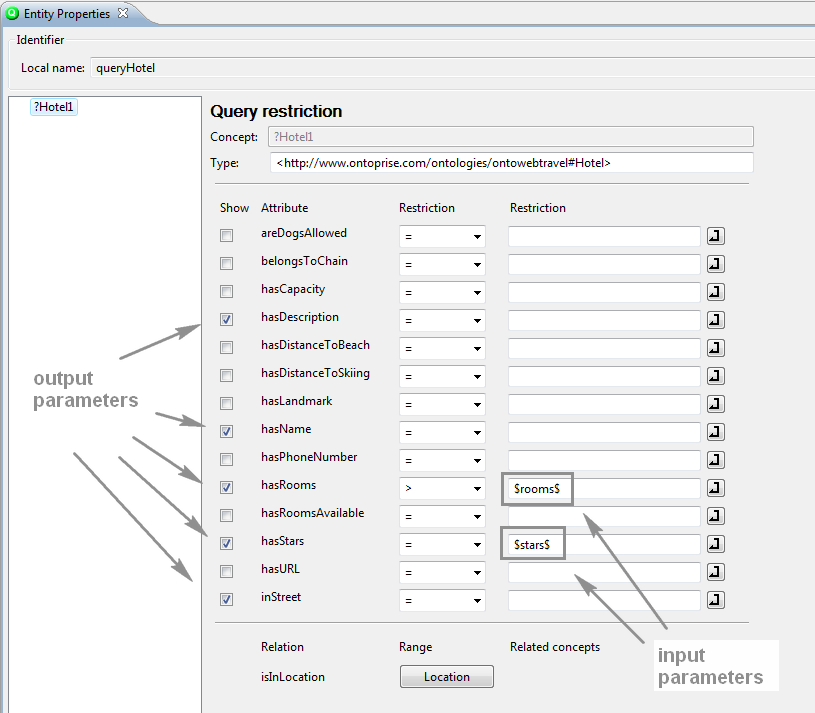
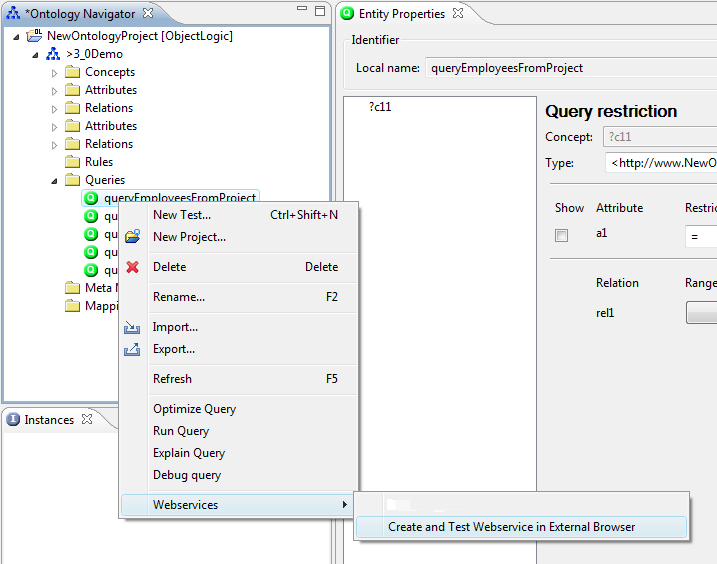
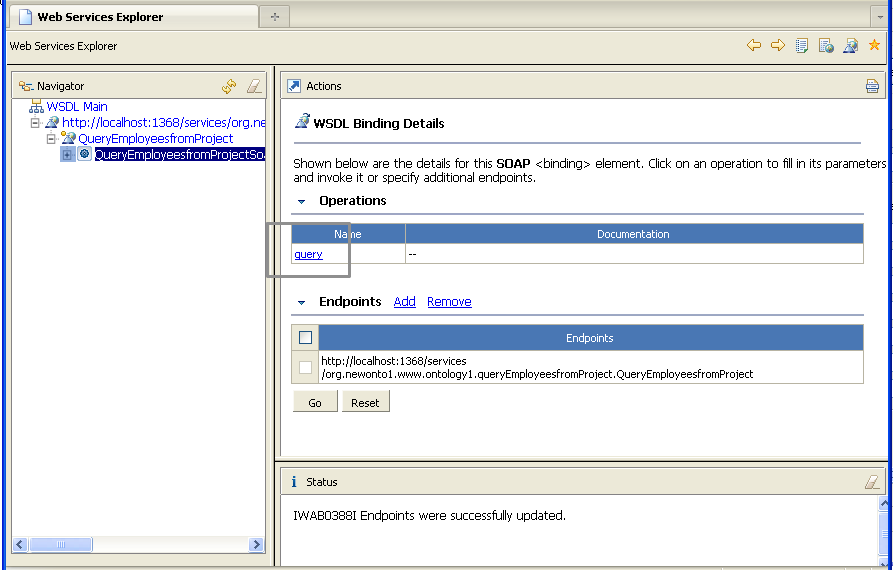
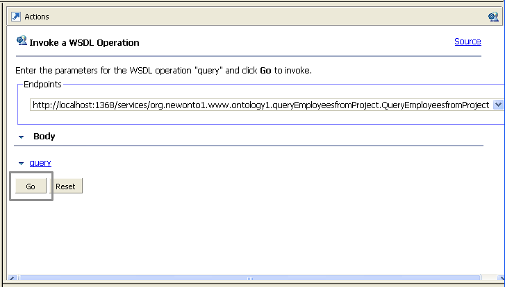
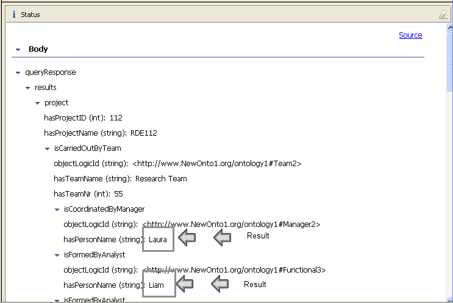
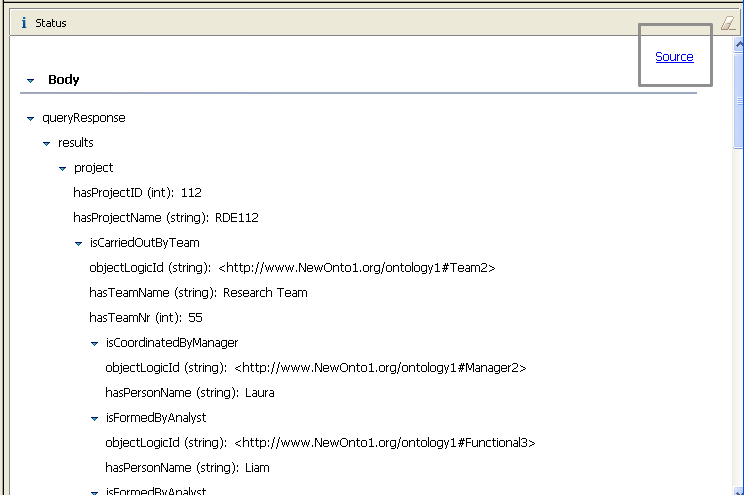
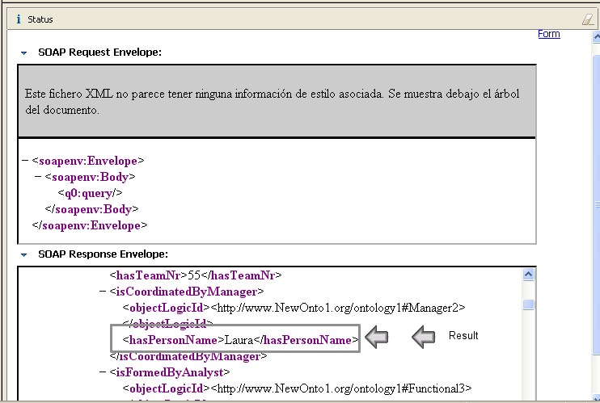

|

|
|
Querying Web Services |
|
|
|
|
Querying Web Services |
You can make queries in OntoStudio accessible as a Web service. You can define properties as input and output parameters and deploy the query as a Web service to the underlying OntoBroker instance. For a detailed description of OntoBroker Web services see the chapter "OntoBroker and Web Services (SOAP/WSDL)" of the OntoBroker manual. The interface used to work with those deployed services is the "Eclipse Webservices Explorer".
Prerequisite:
| • | Define the Input and Output Parameters for the Query: Input parameters are defined by flagging the Show checkbox on the query property page. Output parameters are defined using the syntax seen below: (Just use some variable name preceded and followed by a $) |

| 1. | Select a query in the Ontology Navigator and make a right click on it. |
| 2. | Select Web Services and Create and Test WebService in External Browser. |

You are asked for permission to open the system browser.
| 3. | Click on Yes. |
The default browser opens automatically, displaying the resulting Web service.
The following happens in the background:
| • | A Web archive file containing the Web service definition (WSDL) is created and published to a certain URL. |
| • | An internal Web server is started, and the Webservice Explorer application is launched. |
| • | Either the default system browser or an internal browser embedded in OntoStudio is opened, pointing to the running application with the generated service URL. |
| 4. | Click on query. |

The query can now be executed from within the browser.
| 5. | Click on Go.  |
The result is displayed (see below).

If input parameters where defined (as described above), a form is displayed.
| 6. | Enter values for those parameters. |
The resulting object tree depends on the output parameters previously defined. For every attribute that was defined as an output parameter a row should be displayed, showing the result. Relations are visualized by child elements.
You can switch between this tree-like visualization, or the "Source View", which shows the raw SOAP response in XML syntax. This can be especially important if something goes wrong. Then an error message will be displayed in the "Source View" only, so remember to switch here in case problems arise.


When a query is deployed as a Web service a check is made to see if there are services deployed from other projects. In that case those services are removed via deleteDynamicSvc command (you will be asked for confirmation). For more information on Web services, see the OntoBroker documentation.
NOTE: Additonal Information about WSDL:
WSDL is an XML format for describing network services as a set of endpoints operating on messages that contain either document-oriented or procedure-oriented information. The operations and messages are described in an abstract way and then bound to a concrete network protocol and a message format to define an endpoint. Related concrete endpoints are combined into abstract endpoints (services). WSDL is extensible to allow describing of the endpoints and their messages regardless of what message formats or network protocols are used to communicate. However, the only bindings described in this document describe how to use WSDL in conjunction with SOAP 1.1, HTTP GET/POST and MIME.
For more Information visit the W3C Website.